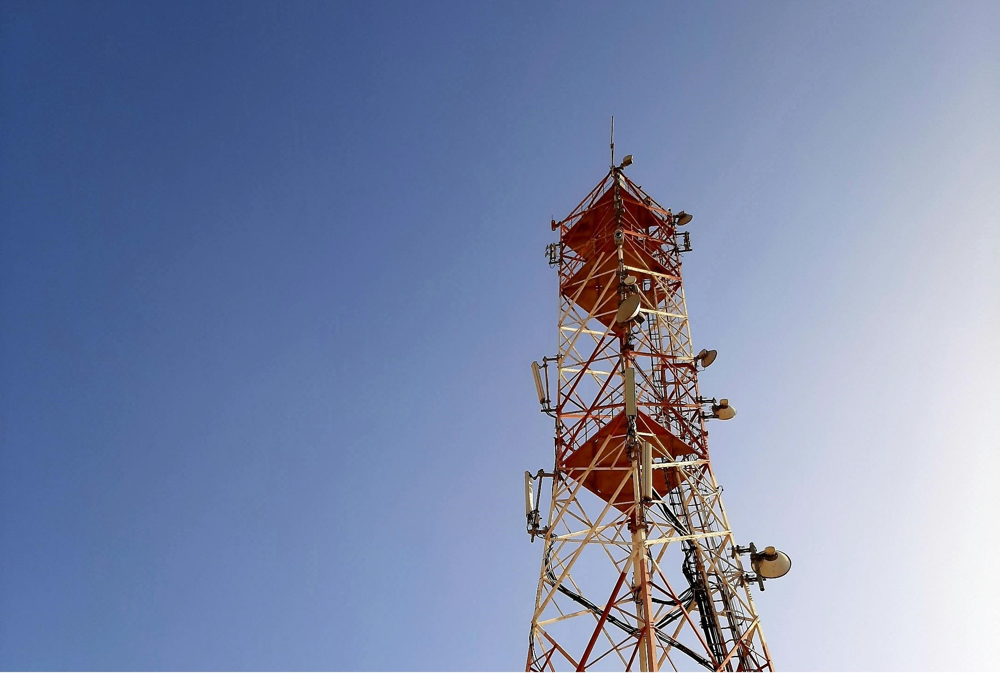

Critical Communications Infrastructure for a Connected Montenegro
Wireless Montenegro Ltd. is a company founded on December 12th 2011 as a private-public partnership between the Government of Montenegro and the Austrian company EOSS Wireless Beteiligungs GmbH from Graz.
The main goal of this partnership is to implement a digital radio system with TETRA standard in the entire territory of Montenegro and to provide free wireless Internet services in all municipalities for the citizens of Montenegro, as well as additional services to tourists visiting Montenegro.
This is the first company in Montenegro founded as a private-public partnership in this field.

Wireless Montenegro is registered with the Agency for Electronic Communications and Postal Services of Montenegro as an operator of electronic communications network based on TETRA standard, and of electronic communications voice and SMS services via TETRA system and internet access service.
Wireless Montenegro is currently in the procedure of joining the international association of TETRA service providers – TETRA + Critical Communications Association from England. This Association encompasses almost all global holders of TETRA system.
Experts involved in TETRA Phase I installation and commissioning.
Certified training by Motorola experts in Berlin.
Independent maintenance and urgent response support.